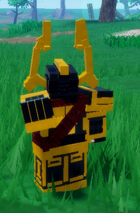
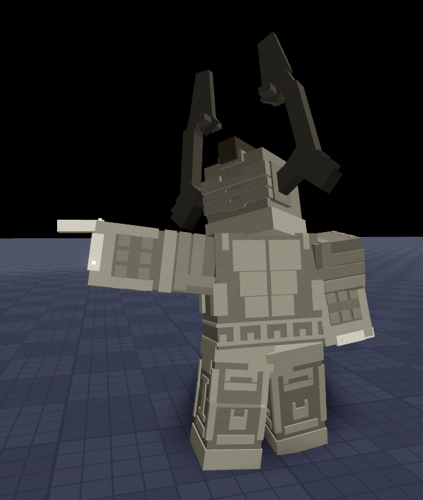
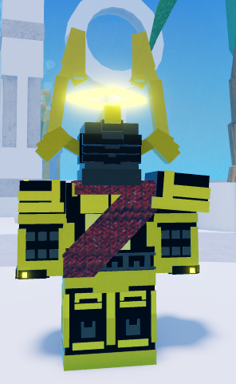

Celestial Champion Set

Info
Slot: Head, Chest, Legs
Recolorable?: Yes
Unique Colors: Star Black & Star Red
Particle Effects: None
Sound Effects: None
Owner: starland2002 / Celestar
Appearance & Effects
In-game description: None
The Celestial Champion set is one of the two relic armor sets currently in Taleara, the other being the Sunken Warrior Set. It consists of the Celestial Champion Helm, Celestial Champion Chestplate, and Celestial Champion Leggings. The set is an ornate armor set with prominent golden trim. The chestplate and leggings have cloth sections that come in the defualt Star Red or Star Black, and can be recolored.
Inspiration
The armor set was originally made as a modelling project by Tid in November 2019. It was used in Bucket Bonk Battle in November 2021, where it was edited to have it's red sash across the chestplate and a recolor. The Celestial Champion Set got a third redesign for Taleara's artstyle, which is the look it has now. The helmet of the Celestial Champion set is based on the the Knight of the Blood Moon hat from Roblox.
Originally, only the helmet was supposed to be obtainable due to the owner, starland2002, not wanting to have three personal relics. The developer, Tid, added the rest of the set, although the owner was only given the helmet. This makes starland2002 the only player to have more than one relic attributed to them in the game.

The full Celestial Champion set
CAPTION_2
Image Gallery

CAPTION

CAPTION
CAPTION
CAPTION
CAPTION
CAPTION